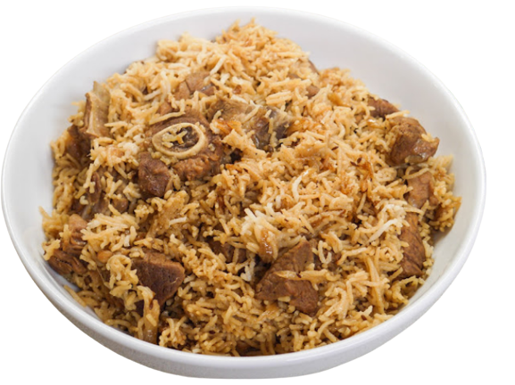
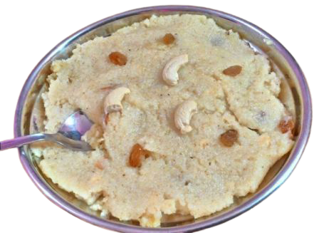

INGREDIENTS
2 cups Basmati rice
500 grams boneless beef, cut into cubes
2 onions, thinly sliced
2 tomatoes, chopped
4 cloves garlic, minced
1-inch piece of ginger, minced
2 green chilies, chopped (adjust to your spice preference)
1/2 cup yogurt
1/4 cup cooking oil or ghee (clarified butter)
1/2 teaspoon cumin seeds
1 cinnamon stick
4-5 green cardamom pods
4-5 cloves
1 bay leaf
1 teaspoon cumin powder
1 teaspoon coriander powder
1/2 teaspoon turmeric powder
1 teaspoon red chili powder (adjust to taste)
Salt to taste
Fresh coriander leaves and mint leaves for garnish
Fried onions for garnish
PROCEDURE
Wash the rice thoroughly under running water until the water runs clear. Soak the rice in water for
about 30 minutes, then drain and set aside.
In a large, heavy-bottomed pot or pressure cooker, heat the oil or ghee over medium heat. Add the
cumin seeds, cinnamon stick, green cardamom pods, cloves, and bay leaf. Sauté for a minute or until
they release their aroma.
Add the thinly sliced onions and cook until they turn golden brown. Stir occasionally to prevent
burning.
Add the minced garlic and ginger. Sauté for another couple of minutes until the raw smell
disappears.
Add the chopped tomatoes and green chilies. Cook until the tomatoes are soft and the oil starts to
separate from the mixture.
Now, add the beef cubes and cook until they are browned on all sides.
Add the yogurt, cumin powder, coriander powder, turmeric powder, red chili powder, and salt. Mix
well and cook for a few minutes until the spices are well incorporated.
Add 4 cups of water and bring the mixture to a boil. Once boiling, reduce the heat to low, cover
the pot, and simmer for about 30-40 minutes (or follow your pressure cooker instructions for cooking
beef) until the beef is tender and cooked through.
You may need to add more water if it dries out during cooking.
Once the beef is cooked, add the soaked and drained rice to the pot. Stir gently to combine the
rice with the beef and spices.
Cover the pot again and let the rice cook on low heat for about 15-20 minutes, or until the rice is
tender and cooked through. You can check by taking a grain and tasting it.
Once the rice is done, fluff it gently with a fork. Garnish with fresh coriander leaves, mint
leaves, and fried onions if desired.
Serve hot with raita (yogurt sauce) or a side salad.
ENJOY

Bannu Sohan Halwa
BANNU SPECIAL MILK HALWA
INGREDIENTS
1 cup milk
1 cup sugar
1/2 cup ghee (clarified butter)
1 cup semolina (suji or sooji)
1/4 cup chopped nuts (almonds, cashews, pistachios)
1/4 teaspoon cardamom powder
A pinch of saffron strands (optional)
1/4 cup khoya (mawa), grated (optional)
PROCEDURE
Prepare the Saffron Milk (if using): If you're using saffron strands, warm a tablespoon of milk and add the saffron strands to it. Let it sit for a few minutes to infuse the milk with saffron flavor and color.
Roast Semolina: Heat a heavy-bottomed pan or kadai on medium heat and add the ghee. Once the ghee melts, add the semolina (suji) and start roasting it. Stir continuously to avoid burning. Roast the semolina until it turns light brown and you can smell a nutty aroma. This should take around 8-10 minutes.
Add Milk: Slowly pour in the milk, stirring continuously to avoid lumps. Be careful, as the mixture will sizzle. Keep stirring until the semolina absorbs the milk and thickens.
Add Sugar: Add the sugar and continue to stir. The sugar will melt and create a smooth consistency.
Add Saffron Milk and Nuts: If you prepared saffron milk, add it at this stage for a beautiful color and flavor. Also, add the chopped nuts and cardamom powder. Mix everything well.
Cook Until Thickened: Keep cooking the mixture on low heat while continuously stirring. The halwa will start leaving the sides of the pan and become thick. This process may take about 10-15 minutes.
Add Khoya (if using): If you're using khoya (mawa), grate it and add it to the halwa. Stir until it's well incorporated. This will make the halwa richer and creamier.
Serve: Once the halwa reaches your desired consistency (it should be thick but still pourable), remove it from the heat.
Garnish: Garnish with some extra chopped nuts on top.
Serve Warm: Bannu Milk Halwa is best enjoyed warm. You can serve it in individual bowls or on a plate, garnished with more nuts.
Enjoy your homemade Bannu Milk Halwa as a delightful dessert or sweet treat!
ENJOY
